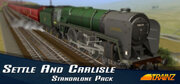

Trainz: Settle & Carlisle
Trainz: Settle & Carlisle
Detalles
|  | |
| Tiempo de juego | 22m 0s |
| Última actividad | 30/07/2013 19:06:05 |
| Añadido | 23/07/2021 17:30:16 |
| Modificado | Nunca |
| Estado de finalización | Jugado |
| Librería | Steam |
| Fuente | Steam |
| Plataforma | PC (Windows) |
| Fecha de lanzamiento | 01/10/2010 |
| Puntuación de la Comunidad | 50 |
| Puntuación de la Crítica | |
| Puntuación de usuario | |
| Género | Simulation |
| Desarrollador | N3V Games |
| Editor | N3V Games |
| Característica | Single Player |
| Enlaces | Community Hub Discussions Guides News Store Page PCGamingWiki |
| Tag | |
Descripción
We take you to one of the most famous and scenic British main lines at the time of the transition from steam to diesel power. With 10 different types of locomotives and dozens of rolling stock items at your disposal you decide what train to drive. Sessions featuring Anglo-Scottish expresses, local stopping trains, fast freights, heavy mineral, slow pickup goods or trip workings offer a rich variety of services for your enjoyment. The 87 mile route from Skipton to Carlisle over the wild and remote Pennine moors will test your driving skills and ability to keep to schedule. Prototypical topography, track plans, gradients, stations, signal boxes and signal placement, viaducts and tunnels will complete your experience. With 'Trainz Simulator: Settle and Carlisle' you will almost believe that you are there.
There is semaphore signaling with new logic, and water troughs to replenish the tender whilst on the move. AWS (Automatic Warning System) is fitted to some diesel locomotives to give advance indication of the signaling, this provides extra security for the safe running of your consist.
For this steeply graded route large locomotives have been provided, including the powerful Britannia and A3 Pacifics, the LMS 8F 2-8-0 and the BR 9F 2-10-0. The LMS 4F 0-6-0 is included for the lighter trains and for shunting work a choice of the LMS 3F and the L&Y 2F 0-6-0 tank engines. All these locomotives have a multiple choice of running numbers and adjustable headlamp codes. The diesels include the large Class 40 (Whistler) and the versatile Class 37. The smaller Class 24 is included for lighter duties.
For rolling stock there is a new range of Mk1 coaches and an impressive array of new goods vehicles. These include the 4 and 6 wheel tankers, the anhydrite hopper wagons, the Presflo for powder loads. Other goods vehicles will include a variety of vans, open wagons and flat tops to represent the typical goods traffic of the time. The ubiquitous brake van has not been forgotten, of course.
There is semaphore signaling with new logic, and water troughs to replenish the tender whilst on the move. AWS (Automatic Warning System) is fitted to some diesel locomotives to give advance indication of the signaling, this provides extra security for the safe running of your consist.
For this steeply graded route large locomotives have been provided, including the powerful Britannia and A3 Pacifics, the LMS 8F 2-8-0 and the BR 9F 2-10-0. The LMS 4F 0-6-0 is included for the lighter trains and for shunting work a choice of the LMS 3F and the L&Y 2F 0-6-0 tank engines. All these locomotives have a multiple choice of running numbers and adjustable headlamp codes. The diesels include the large Class 40 (Whistler) and the versatile Class 37. The smaller Class 24 is included for lighter duties.
For rolling stock there is a new range of Mk1 coaches and an impressive array of new goods vehicles. These include the 4 and 6 wheel tankers, the anhydrite hopper wagons, the Presflo for powder loads. Other goods vehicles will include a variety of vans, open wagons and flat tops to represent the typical goods traffic of the time. The ubiquitous brake van has not been forgotten, of course.